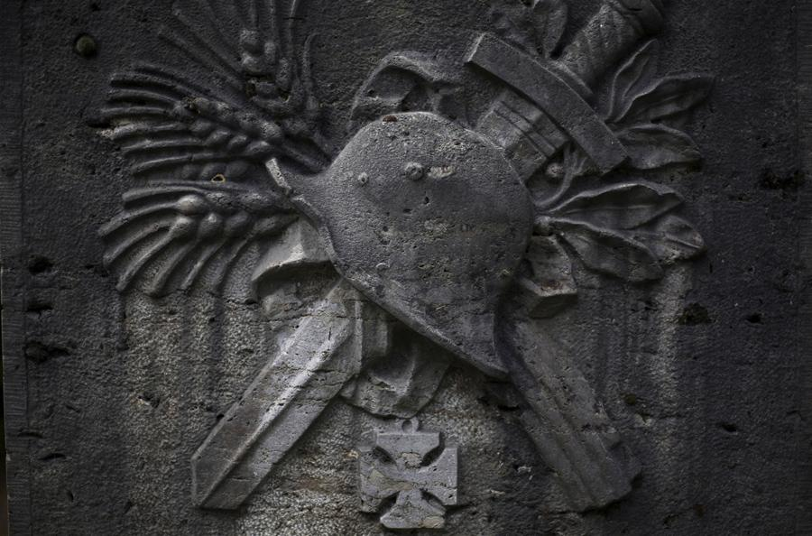
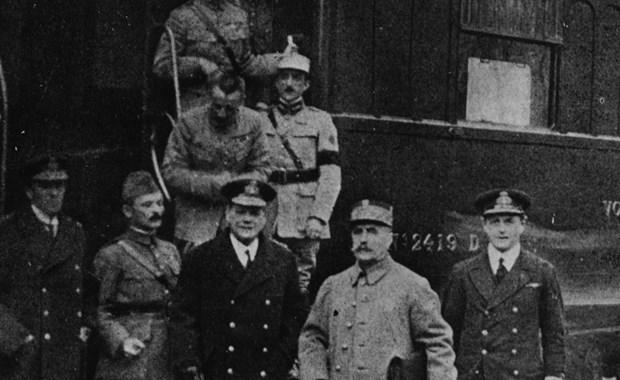

|
Can you identify the battle and when and where the picture was taken?
The War of the Nations: Thirty-two countries were involved in World War I, thus the name the War of the Nations.
Winter will definitely arrive sometime in November, usually indicated by when the leaves have fallen from the trees and the city takes on a gray and gloomy look. The average daily temperature will fall to 7C and 45F. The average daily highs and lows will be: 11C high and 6C low; and 52F high and 43F low. The amount of rainfall will decline to 22 mm, but the possibility of snow increases. Rain occurs on about half of all days. The hours of sunshine are down to 2, as winter sets in. The key thing to keep in mind was that in the trenches and forward areas everything was damp or wet most of the time and the chill or cold was of that constant piercing kind that goes right down to the bones.
Note that in general as one moves north and east of Paris the extremes in the weather will increase. And, as one moves south and west there may be a slight improvement in the weather. The statistics on Spanish influenza cases and the weather patterns show that there was a definitely relationship between the Spanish influenza pandemic and WWI. The weather of the winter of 1918 was one of the worst in century in the Western Front. That, combined with the number of soldiers living in unsanitary conditions and the tens of millions of people who were not getting a healthy diet, made the entire region a major center for the Spanish flu pandemic. Although precise numbers are hard to come-by it is clear that many more millions of people died from the flu than the war.
First Spanish flu cases in Spain, where reports on the disease are published freely due to the lack of wartime censorship. News about the rapidly spreading pandemic was carefully controlled on the Western Front and in newspapers at home until the story got too big to hide.
FOUR PHASES OF WWI:
1) From the day the War began on 28 June, 1914 to 15 July 1918, the period of German military ascendancy --- 1481 days, 4 years, 0 months, and 20 days
2) From the beginning of the German military decline on 18 June 1918 to the end of military hostilities, the Armistice, on 11 November, 1918. --- 116 days, 0 years, 3 months, and 24 days
3) From the Armistice signing on 11 November, 1918 to the signing of the Paris Peace Conference Agreements or Treaty of Versailles on 25 July, 1919. --- 256 days, 0 years, 8 months, and 14 days
4) From Paris Peace Conference on 25 July, 1919 to the signing of Treaty of Severs with Turkish Republic on 24 July, 1923. --- 1460 days , 3 years, 11 months, 29 days
TOTAL HOURS, DAYS, YEARS:
79512 hours, 3313 Days, 9 Years, 0 Months, 26 Days
We are now approaching the end of Phase 2.
Operations of USA First Army, November 1 – 11, 1918
1
10 DAYS TO GO TUESDAY 1 NOVEMBER 1918 7C/45F
Hundred Days Battle: “Don’t worry, mate, I’ve got your back covered.”
Images of the Hundred Days Battle: ANZACs at Peronne
The Superfluous Sinking of the SMS Viribus Unitis
Western Front
Americans and French advance between Aisne and Meuse in Argonne Forest.
Battle of the Sambre begins.
British reach outskirts of Valenciennes.
British, French and Americans reach Gavere, on Scheldt (ten miles south of Ghent).
Eastern Front
Ukraine National Council assumes administration of East Galicia.
Collisions between Polish and Ukrainian troops.
Lemberg proclaimed to be in state of siege.
Southern Front
Serbs re-enter Belgrade.
Austrians retreat from Venetian Alps and plain towards River Tagliamento.
Naval and Overseas Operations
Austrian Dreadnought "Viribus Unitis" sunk at Pola by two Italians.
Political, etc.
Versailles Conference opens.
Abdication of King Boris of Bulgaria announced; peasant Government established at Tirnova under leadership of Mr. Stambuliski.
Revolution in Vienna.
Hungarian National Council assumes power. Count Michael Karolyi becomes Premier.
Great Serbian National Council proclaimed at Sarajevo (Bosnia).
Battle of Chesne (Closing phase of the Meuse-Argonne Offensive).
Battle of Valenciennes (1 – 2 Nov), closing phase of the Hundred Days Offensive.
Belgrade retaken by Serbian forces.
Merv retaken by British and Russian forces.
German force in East Africa enters Rhodesia and attacks Fife.
“State of War” begins between The Ukraine and Poland.
Austrian battleship “Viribus Unitis” sunk in Pola harbor.
King Boris of Bulgaria abdicates.
Independent Hungarian Government formed. Count Karolyi appointed Premier.
Baron von Flotow succeeds Count Andrassy (provisionally) as Austro-Hungarian Foreign Minister.
November 1, 1918 - Belgrade is liberated by French and Serbian troops.
November 1, 1918 - After pausing to regroup and resupply, Allied armies resume their eastward march as the U.S. 1st Army and newly formed U.S. 2nd Army attack remaining German positions along the Meuse River near southern Belgium, while the Belgians and British move toward Ghent and Mons in Belgium.
2
9 DAYS TO GO WEDNESDAY 2 NOVEMBER 1918 7C/45F
As an example of the grim nature of the battle, two bodies were found in one street locked together, one of a German officer with revolver in his hand, the other of his victim, a Scottish soldier clutching his rifle with bayonet which he had run through his opponent's body.
The commander of the relieving French division, General C. Gassoins, on establishing his headquarters in Buzancy, seeing the still-fresh aftermath of the attack and receiving reports of what had occurred, was so impressed that he ordered the immediate construction of a memorial to the 15th Division on the position of the soldier's body found furthest forward on the battlefield, in the open fields beyond the village. On its plain granite plinth is sculpted a circular bas-relief showing an intertwined rose and thistle, below which is inscribed (in French):
"Here will flourish for ever
the glorious thistle of Scotland
among the roses of France"
and on the side
The 17th French Infantry Division
to
The 15th Scottish Infantry Division
It was the only monument erected in the field during the First World War by a French unit dedicated to a British one. It was a visible manifestation of the significant resurgence which the various actions at the time of XXII Corps brought about in the French command's faith in the continued fighting ability of its British ally, a faith which had lately been badly shaken by the dramatic British retreat at the start of the German Kaiserschlacht offensive.
The monument was later removed from the position near the crest of the ridge where first erected and placed in the care of the Commonwealth War Graves Commission within the precincts of the military cemetery on the western edge of the village, where those of the 15th (Scottish) Division who fell in the action are interred.
Western Front
Allied advance continued.
Germans retreat in Argonne Forest.
Americans capture Buzancy.
French capture south bank of Canal des Ardennes between Semuy and Neuville.
Eastern Front
Polish Regency Council orders formation of regular Standing Army.
Southern Front
Austrian retreat in Venetian Alps and plain continued.
Allies enter Belluno.
Battle of Valenciennes ends.
Last two British merchant vessels sunk in the Mediterranean.
3
8 DAYS TO GO THURSDAY 3 NOVEMBER 1918 7C/45F

Paul Emil von Lettow-Vorbeck
Schutztruppen Artillery “Nate’s Nonsense”
Western Front
Allied advance continued.
Naval and Overseas Operations
Von Lettow attacks Fife (frontier post of Rhodesia) and is repulsed.
Political, etc.
Publication of armistice terms with Turkey.
Mass meeting of Trade Unionists in London to consider Labour's part in the Peace.
Baron Flotow succeeds Count Andrassy as Minister for Austria-Hungarian Foreign Affairs.
Slovenes take over administration of Carniola.
Austria-Hungary signs the armistice with Italy, effective 4 November.
On 3rd November, Austria made peace.
Allied Governments agree to Germany’s proposal for an armistice and peace on basis of President Wilson’s proposals of January 8th.
Trieste occupied by Italian forces.
Mutiny breaks out in the German fleet in Kiel.
November 3, 1918 - Mutiny strikes the German Navy at the ports of Kiel and Wilhelmshaven as sailors refuse orders to put to sea to engage in a final colossal battle with the British Navy. Along with this, revolutionary fervor and Bolshevist-style uprisings erupt in German cities including Munich, Stuttgart and Berlin. The extent of the unrest stuns German leaders, and even the Allies, who fear Germany might now succumb to a violent Bolshevist revolution in the manner of Russia. This brings a stark urgency to the armistice negotiations.
November 3, 1918 - The only remaining ally of Germany, Austria-Hungary, signs an armistice with Italy, leaving Germany alone in the war.
4
7 DAYS TO GO FRIDAY 4 NOVEMBER 1918 7C/45F
Le Chesne on the Ardennes Canal then
And now
Western Front
Great British (1st, 3rd and 4th Armies) and French offensive on 30-mile front from east of Scheldt at Valenciennes to Guise on Oise, reaching to east of Le Quesnoy, half way through Mormal Forest, past Landrecies on Sambre and across Sambre-Oise Canal. 10,000 prisoners and 200 guns captured.
Belgians advance to north-west and southern suburbs of Ghent.
French reach Le Chesne on Ardennes Canal.
Americans advance to Stenay on Meuse.
Southern Front
Hostilities between Austria-Hungary and Entente cease at noon.
Naval and Overseas Operations
German battleship mutiny at Kiel.
Italian occupation of Adriatic.
Italian ships enter Fiume and Zara, occupy Rovigno, isles of Lagosta, Meleda and Curzola, and ports of Dulcigno and Antivari (Montenegro).
Political, etc.
U.S.A. recognise Polish army as autonomous and co-belligerent.
Spread of revolution to Hamburg, etc.
Battle of the Sambre, closing phase of the Hundred Days Offensive.
Second Battle of Guise, a phase of the Battle of Sambre.
Battle of Thierache, a phase of the Battle of Sambre.
Battle of Vittorio Veneto ends.
Hostilities between Austria-Hungary and the Entente cease.
Montenegro occupied by Italian naval forces.
Mosul occupied by British forces.
5
6 DAYS TO GO SUNDAY 5 NOVEMBER 1918 7C/45F
A drone's-eye view of the preserved World War I battlefield at the Beaumont-Hamel Newfoundland Monument in Beaumont-Hamel, France, on June 10, 2016. The preserved trenches and craters are part of the grounds on which the Newfoundland regiment made their unsuccessful attack on July 1, 1916, the opening day of the Battle of the Somme
Tree limbs surround the World War One Canadian Memorial, also known as the 'Brooding Soldier' in St. Julien, Belgium on March 7, 2014. The statue is a memorial to the Canadian troops who died in the first gas attacks of the First World War in 1915
Western Front
Allied advance from Scheldt to Meuse continued.
Between Scheldt and Sambre British capture Le Quesnoy and Mormal Forest. Between Oise and Aisne French capture Chateau-Porcien (on Aisne) and Guise (on Oise). Between Aisne and Meuse French cross Ardennes Canal; Americans cross Meuse at Brieulles and Clery-le-Petit and take Beaumont.
Marshal Foch in supreme strategical direction. This is a major event as the end of the fighting nears for two reaons: first, Foch will be able to dictate the details of any armistice agreement signed with the Germans; and, second, he has effectively been “kicked upstairs” and once again the politicians are in charge of grand policy making in regard to the War.
Eastern Front
Resignation of Siberian Government in favour of "All-Russian Government".
Naval and Overseas Operations
Italians enter Pola.
Political, etc.
U.S.A. elections for Congress; Republican majority returned.
British Ministerial changes; Sir A. Geddes becomes President of Local Government Board in place of Mr. W. Hayes-Fisher, resigned.
Announcement of Mr. Lloyd-George in Commons re: Armistice.
President Wilson replies to Germany re: Armistice.
Marshal Foch placed in supreme strategic direction of all forces operating against Germany on all fronts. ( !!)
Fiume occupied by Italian naval forces.
HMS Campania sunk by collision in the Firth of Forth. No loss of life.
President Wilson sends final Note to the German Government with Allies’ acceptance of armistice proposals.
November 5, 1918 - The Germans are informed by President Wilson that armistice discussions can begin on the basis of his Fourteen Points as they requested, but that an armistice must be secured through France's Marshal Foch, the Allied Supreme Commander
6
5 DAYS TO GO MONDAY 6 NOVEMBER 1918 7C/45F
Sheep graze in an area still dangerous from unexploded World War One munitions at the Canadian National Vimy Memorial on March 26, 2014 in Vimy, France
A German cemetery somewhere in France contains the graves and memorials for some 25,000 German soldiers. The sculpture of a grieving mother and father was done by a German artist whose eighteen-year-old son is buried in front of the sculpture.
Western Front
German armistice delegates leave Berlin for Western Front.
German retreat from Scheldt to Meuse becomes general.
British advance towards Mons, Mauberge and Avesnes.
French between Oise and Aisne capture Vervins and Rethel on Aisne.
Americans capture Sedan but allow a French Army unit to enter the city first.
Main German lateral line of communications cut.
Eastern Front
Directorate of Polish Republic formed with seat at Cracow.
Political, etc.
Publication of terms of Austrian Armistice.
U.S.A. promises to exercise influence to secure for Romania political and territorial rights.
Advance to the Meuse (6 – 11 Nov).
Sedan taken by United States forces.
King Peter of Serbia re-enters Belgrade.
7
4 DAYS TO GO MONDAY 7 NOVEMBER 1918 7C/45F

A monument to local men who were killed during World War I, photographed on June 24, 2014 in Wildenroth, Germany. Villages across southern Germany usually have a small monument to men killed while serving in the German army during World War I, and the listed names often number into the dozens or even hundreds even in villages with small populations.
"These are some of our Marines buried here," said U.S. Marine Sergeant Major Darrell Carver of the 6th Marine Regiment as he walked among the graves of U.S. soldiers, most of them killed in the World War I Battle of Belleau Wood, during a ceremony to commemorate the 100th anniversary of the battle on Memorial Day at the Aisne-Marne American Cemetery on May 27, 2018, near Chateau-Thierry, France. Nearly 100 years before U.S. soldiers, including marines from the 6th Regiment, repelled repeated assaults from a German advance at Belleau Wood only 60 miles from Paris. The U.S. suffered approximately 10,000 casualties in the month-long battle. Today the Battle of Belleau Wood is central to the lore of U.S. Marines.
Western Front
Marshall Foch informs German armistice delegates they may advance to French outposts by Chimay-Fourmies-La Capelle-Guise road.
Allies' advance continues.
British make formal entry into Valenciennes, gain west outskirts of Avesnes, reach Haumont (three miles from Mauberge) and Elouges (9.5 miles south-west of Mons).
French and Americans threaten Charleville-Mezieres.
Naval and Overseas Operations
German naval revolt spreading.
Admiral Sir R. Wemyss appointed British Naval representative with Marshal Foch to receive German Delegates.
Political, etc.
(British) Appointment of Civil Department of Demobilisation and Re-settlement.
Health Ministry Bill introduced into Commons.
Yugo-Slav-Serbian Government to be formed.
Kiel and Hamburg in hands of "Soviets".
Flight of King of Bavaria from Munich.
British and French Governments proclaim deliverance of Eastern peoples from Turkish oppression.
Bavaria proclaimed a Republic.
8
3 DAYS TO GO TUESDAY 8 NOVEMBER 1918 7C/45F
Three small Commonwealth WWI cemeteries are located on the same farm in France. The British custom is to bury soldiers where their bodies were found or on the battlefield.
Archaeologists in the city of Arras in northern France discovered the intact remains of 24 British servicemen who were buried in 1917 during World War I. The discovery of the skeletons, which lay side by side with their army boots still intact had evidence they were from the same town. They were unearthed during the excavations for a new BMW plant at the end of May 2001. The Commonwealth War Graves Commission who took possession of the remains, identified 20 of the soldiers who were buried together to be from the 10th Lincoln Battalion. Three others, found in a nearby shell hole, were from the Marine Infantry and one other was found buried alone.
Wild poppies grow on the verge of a Flemish field near Tyne Cot Military Cemetery as dawn breaks on August 4, 2014, in Passchendaele, Belgium.
Western Front
Marshal Foch receives German armistice delegates at Rethondes (four miles from Compiegne), refuses request for provisional armistice, terms of armistice to be accepted or refused by 11 am on 11 November.
Allies continue advance: French reach outskirts of Hirson and Mezieres; French and Americans clear heights east of Meuse; British capture Avesnes and Maubeuge, advance towards Mons capturing Conde, cross Scheldt Canal and occupy west part of Tournai.
Over 18,000 prisoners taken by British since 1 November.
Eastern Front
Polish Government informs Austrian Premier that Polish sovereignty has been assumed over Galicia.
Political, etc.
Prince Max of Baden issues proclamation to Germans abroad declaring Germany beaten, and resigns Chancellorship.
Abdication of King of Wurttemberg and Duke Ernest of Brunswick.
Bavarian Republic declared at Munich.
(British) Minister of Blockade informs neutral countries that transfer of enemy ships to neutrals will not be recognised.
German armistice delegation reach Allied General Headquarters.
Maubeuge retaken by British forces.
Rumanian Premier and Foreign Minister resign.
November 8, 1918 - At Compiègne, France, six representatives of the German government, with Matthias Erzberger as spokesman, are brusquely presented with armistice terms by Marshal Ferdinand Foch. The terms include German evacuation of all occupied territory, an Allied occupation of Germany west of the Rhine River, surrender of weaponry including all subs and battleships, and indefinite continuation of the naval blockade.
9
2 DAYS TO GO WEDNESDAY 9 NOVEMBER 1918 7C/45F
H.M.S. Britannia torpedoed and sinking off Gibraltar
Death of Herr Albert Ballin
Western Front
British enter Maubeuge, approach Mons, capture Tournai.
French surround Mezieres and occupy Hirson.
Eastern Front
Polish Government formed at Lyublin.
Southern Front
Romanian ultimatum to Marshal von Mackensen: German troops to leave Romania within 24 hours.
Asiatic and Egyptian Theatres
French occupy Alexandretta (northern Syria).
Naval and Overseas Operations
H.M.S. "Britannia" (battleship) torpedoes and sunk off Gibraltar (40 drowned).
Albert Ballin acted as mediator between the United Kingdom and the German Empire in the tense years prior to the outbreak of World War I. Terrified that he would lose his ships in the event of naval hostilities, Ballin attempted to broker a deal whereby the United Kingdom and Germany would continue to race one another in passenger liners but desist in their attempts to best one another's naval fleets. Consequently, the outbreak of war deeply disillusioned him. Many of the Hamburg-America Line's ships were lost or suffered considerable damage during the hostilities.
Completely distraught upon hearing the news of the abdication of his benefactor and protector, Kaiser Wilhelm II, Ballin committed suicide by taking an overdose of sleeping pills two days before the armistice ended World War I. Ballin's fears were soon to be realized; the company's flagships, the triumvirate SS Imperator, SS Vaterland and SS Bismarck were ceded as war prizes to Great Britain and the United States
Political, etc.
Nominal Abdication of Kaiser.
Flight of Kaiser and Crown Prince to Holland.
Revolution in Berlin.
Prince Max becomes Regent; Herr Ebert becomes Chancellor.
Herr Kurt Eisner assumes Premiership and Ministry of Foreign Affairs of Bavarian Republic.
Reported resignation of Marghiloman Cabinet at Jassy; General Coanda to form New Cabinet.
Swiss Federation of Workmen's Unions orders general strike.
Speech of Mr. Lloyd George at Mansion House.
Kaiser Wilhelm II of Germany abdicates; goes into exile in Holland; republic proclaimed.
On 9th November, Kaiser Wilhelm II abdicated. Chancellor Prince Max named Regent.
Alexandretta (Syria) occupied by Entente naval forces.
Kasama (Rhodesia) taken by Colonel von Lettow-Vorbeck’s force.
HMS Britannia sunk by submarine in the Atlantic (last warship so lost).
Revolution breaks out in Berlin.
Joint Declaration by British and French Governments regarding the future of Syria and Mesopotamia.
Czech forces at Ekaterinenburg proclaim national independence.
November 9, 1918 - The Kaiser's Imperial government collapses in ruin as a German republic is proclaimed with Friedrich Ebert heading the new provisional government. Kaiser Wilhelm then seeks refuge in Holland amid concerns for his safety after his generals warn him they may not be able to adequately protect him from the volatile situation in Germany.
10
1 DAY TO GO THURSDAY 10 NOVEMBER 1918 7C/45F
HMS Ascot was a Racecourse-class minesweeper of the Royal Navy. The Racecourse-class comprised 32 paddlewheel coastal minesweeping sloops.
She was the last ship to be sunk in the First World War on 10 November 1918, the day before the announcement of the armistice. She was torpedoed by UB-67 off the Farne Islands.
She lies at a depth of 60 metres, at 55°37′9.24″N 001°29′8.60″W.
A grateful acknowledgment of wiki’s help in the preparation of this project. Ditto to Google, alamy and Bing.
Western Front
French and Americans cross Meuse, capture Hirson, and advance towards Montmedy; surround Mezieres.
Southern Front
Romania takes up arms again.
Allied forces cross Danube and join hands with Romanians.
Asiatic and Egyptian Theatres
British join French at Alexandretta.
Naval and Overseas Operations
British mine-sweeper "Ascot" torpedoed and sunk by German submarine off north-east coast of England (53 lives lost).
Political, etc.
Tewfik Pasha (ex-ambassador to London) is appointed by Sultan Grand Vizier and forms pro-Entente Government at Constantinople.
Kaiser crosses into Holland.
Death of Herr Ballin.
Austria-Hungary: Kaiser Charles I abdicates.
Romania reanudates the war against the Central Powers.
Ghent reoccupied by Belgian forces.
Allied forces cross the Danube at Rushuk and enter Rumania.
King of Rumania announces that the Rumanian nation has taken up arms again on the side of the Allies.
Kaiser crosses border into Holland.
11
ARMISTICE DAY, FRIDAY, 11 NOVEMBER 1918 7C/45F
SPECIAL REPORT

Ferdinand Foch, second from right, pictured outside the carriage in Compiègne after agreeing to the armistice that ended the war there.
Four different daily headlines from Chicago Tribune, 2 cents a day, 7 cents on Sunday.
Western Front
French and Americans cross Meuse, capture Hirson, and advance towards Montmedy; surround Mezieres.
Southern Front
Romania takes up arms again.
Allied forces cross Danube and join hands with Romanians.
Asiatic and Egyptian Theatres
British join French at Alexandretta.
Naval and Overseas Operations
British mine-sweeper "Ascot" torpedoed and sunk by German submarine off north-east coast of England (53 lives lost).
Political, etc.
Tewfik Pasha (ex-ambassador to London) is appointed by Sultan Grand Vizier and forms pro-Entente Government at Constantinople.
Kaiser crosses into Holland.
Armistice signed.
At 6 am, Germany signs the Armistice of Compiegne in Marshal Foch’s special train at Rethondes station, End of fighting at 11 a.m.
Poland proclaimed.
On 11th November, Germany signed an armistice with the Allies which ended the fighting but did not actually end the “state of war” --- that would come at the Paris Peace Conference and for some drag on to 1925.
Mons retaken by British forces.
New governments in Latvia and Estonia.
November 11, 1918 - At 5:10 am, in a railway car at Compiègne, France, the Germans sign the Armistice which is effective at 11 am--the eleventh hour of the eleventh day of the eleventh month. Fighting continues all along the Western Front until precisely 11 o'clock, with 2,000 casualties experienced that day by all sides. Artillery barrages also erupt as 11 am draws near as soldiers yearn to claim they fired the very last shot in the war.
The casket of US Army Corporal Frank Buckles lies in honor at the Memorial Chapel at Arlington National Cemetery in Arlington, Virginia, March 15, 2011. Buckles, the last American veteran of World War I, died February 27, 2011 at the age of 110. He served in the Army from 1917, at the age of 16, until being discharged in 1920.
AFTERMATH


Ypres After the First Bombardment: Christopher R. W. Nevinson, 1916
The British landscape painter presents an aerial view of the Belgian city of Ypres after it was first bombed in 1915, employing the abstract motifs used by cubists and futurists. Nevinson, a devotee of Italian futurism, initially believed the conflict was a sign of progress in the machine age. But after serving as an official war artist in France, he became ardently anti-war.
Death And Remembrance Paintings
“The Resurrection of the Soldiers”, by Sir Stanley Spencer, (1929)
“Travoys Arriving with Wounded at a Dressing-Station at Smol, Macedonia (1919)” by Sir Stanley Spencer
“Finale (1918)” byAlbin Egger-Lienz

Den Namenlosen (1925) by Albin Egger-Lienz
“A Dead Tank”, by Muirhead Bone, (1918)
La Tranchee (the Trench) By Henry de Groux, (1919)
Grand Duchy Of Luxembourg
Luxembourg declared neutrality in WWI but was invaded by German forces on their way through to France. Some Luxembourgers died as a result of the invasion and a war memorial was erected in Luxembourg city (which was torn-down by the Nazi's in WWII)
Luxembourg fortifications prior to their 1867 demolition
View to Place de la Constitution and Gëlle Fra monument, from the capital's Metz square at the Adolphe Bridge end of Avenue de la Liberté, connecting with the railway station
Luxembourg’s declaration of neutrality didn’t protect it in WWI, above on 4 August 1914
Germans invade and occupy Luxembourg, 1914
Luxembourg in WWII in their left-over WWI uniforms.
Luxembourg is a member of NATO today but one opposition infamously said in Parliament, “Today our main line of defense is our ATM machines.” (about 1.574 per 100,000 adults). Total population is about 591,000.
The Siamese Expeditionary Forces
The Siamese EF seemed to spend more time squabbling with their French “hosts”, who seem to confuse them with other Indo-chinese under the command of the French, than fighting the Germans.
Read the wiki story. It’s not a particularly pleasant one.
The Meuse-Argonne Offensive lasted from 26 Sept. – 11 November, 44 days
Over 600 KIA per day, 2,175+ wounded per day.
The Siamese King, Rama VI, is considered the father of Thai nationalism.
The Siamese Expeditionary Force landed in France at the end of July 1918. The ground forces underwent brief training and proceeded to the fighting front in mid-September. All their equipment was provided by the French military authorities. The Siamese personnel themselves wore khaki uniforms similar to those of the British Army. The motor transport and medical detachments of the Siamese Expeditionary Force reached the front in time to participate in the Champagne and Argonne battles. The Siamese soldiers gave excellent service in these actions. The force, consisting of 850 men, lost 19 killed. Of the 19 killed, half died from the influenza pandemic and the rest in accidents.
On 22 July 1917 Vajiravudh declared war on Germany and Austria-Hungary. He allied Siam with the Allied Powers and expelled German and Austrian officials from the Railway Department and Siam Commercial Bank. He also put the properties of the Central Powers under a Siamese government protectorate. Vajiravudh saw the war as an opportunity to create and promote Siamese nationalism. He changed the Flag of Siam from the elephant banner to the tricolor. King Vajiravudh is considered the father of Thai nationalism, which was later built upon by Field Marshal Phibunsongkhram and Sarit Dhanarajata. He introduced the practice of using the name Rama for the Chakri kings in deference to foreign practice.
Other than 140,000 Vietnamese colonial troops and workers drafted by the French, Siamese troops were the only Southeast Asians in the European theatre. However, the Siamese troops did not see much action, as they arrived in Europe towards the end of the war. Participation in the war allowed Siam to later negotiate with the Western powers as a partner, albeit a junior one.
Major General Phraya Bhijai Janriddhi (Phad Devahastin Na Ayudhaya), commander of the Siamese Expeditionary Forces.
Siamese WWI Victory Medal
The World Wars Volunteers Memorial in Bangkok (not to be confused with the Victory Memorial).
The last surviving member of the Siamese Expeditionary Corps, Yod Sangrungruang, died on 9 October 2003 at age 106.
Conclusion
One thing I’ve learned after studying history, geography and international relations for over fifty years and traveling all over the world visiting what I call famous “war and peace sites” is that no book, no movie, no work of art can replace an actual visit to a location or the hands-on experience of actually touching relics from these sites.
|